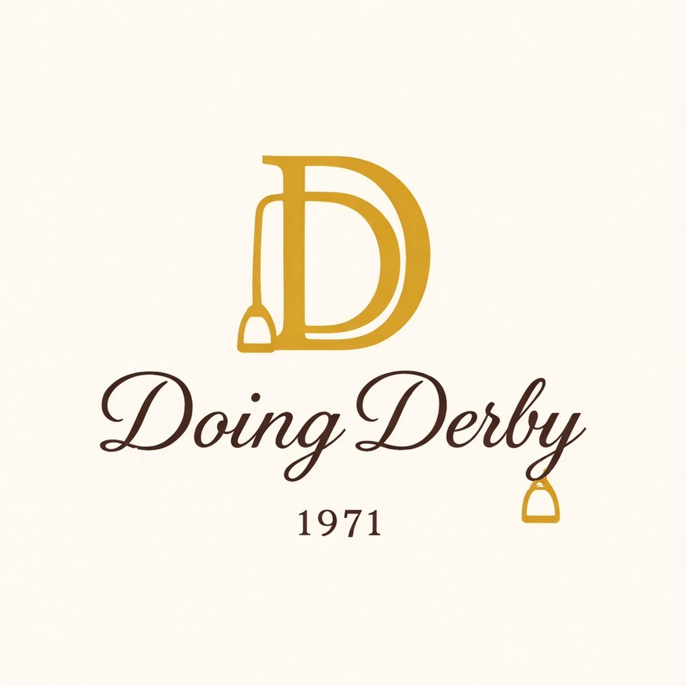

Louisville • Horse Country
A Sip of Fine Kentucky Bourbon
Louisville • Horse Country • A Sip of Fine Kentucky Bourbon. Whether it’s your first Derby or your tenth, the Doing Derby Guide helps you experience Kentucky the way insiders do.
From the thunder of hooves at Churchill Downs to a quiet bourbon tasting in the rolling hills of Woodford County — Doing Derby covers every corner of the Kentucky experience.
History, traditions, seating guides, race-day tips, and everything you need to experience the most exciting two minutes in sports.
Distillery tours, tasting notes, the Bourbon Trail, and the stories behind Kentucky's most storied spirit.
Bluegrass farm tours, thoroughbred culture, Lexington's charm, and the landscapes that define Kentucky's soul.
Hat etiquette, outfit inspiration, and style guides for every venue — from the infield to the clubhouse.
The best restaurants, speakeasies, Hot Browns, and culinary traditions that make Louisville a food city.
The Keeneland spring meet, Lexington's vibrant culture, and the most organic, authentically Kentuckian racing experience in the Commonwealth.
“The race may last only two minutes—but the magic of Derby week lasts much longer.”— An Insider’s Guide to the Kentucky Derby
Curated goods for the Kentucky lifestyle — from Derby Day barware and equestrian home décor to race-day fashion and bourbon country gifts. Every piece chosen to bring the spirit of horse country home.
Our curated collections are available through our Shopify-powered storefront, featuring equestrian-themed goods from premium suppliers across the United States. Every item is hand-selected to reflect the elegance of horse country and the warmth of southern hospitality.
Kentucky bourbon is more than a drink — it's a tradition, a craft, and a way of life. Doing Derby takes you inside the world of bourbon with the reverence it deserves.
From Maker's Mark in Loretto to Woodford Reserve in Versailles, we guide you through Kentucky's legendary distilleries with insider recommendations for tours, tastings, and hidden gems along the way.
Discover how to pair Kentucky's finest bourbons with southern cuisine — from smoked meats and aged cheeses to our very own Bourbon Butterscotch Cinnamon Rolls.
The Mint Julep is just the beginning. Explore classic and contemporary bourbon cocktails perfect for Derby Day entertaining, from the Old Fashioned to the Bourbon Smash.
Host your own Derby Day celebration with our guides to tablescaping, menu planning, and the art of southern hospitality that would make any hostess proud.
Get insider Derby tips, bourbon recommendations, new recipes, and first access to the Doing Derby Guide — plus dispatches from across the Commonwealth, delivered straight to your inbox.